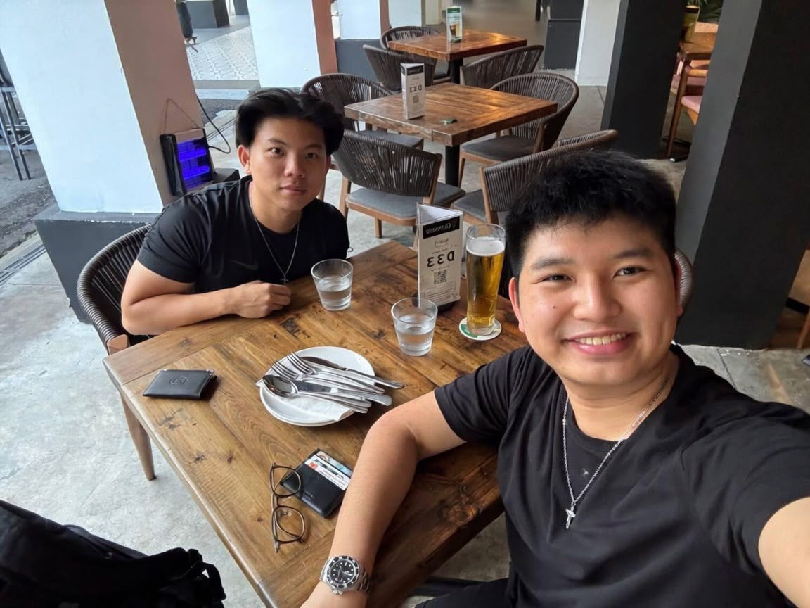

Every business deserves to look as good as they are.
We started sitevine because we believe in brand image, in marketing, in giving individual businesses the visibility they deserve. For too long, a proper website felt like something only bigger companies could afford. We think that's backwards. Now everyone can have a site that looks custom-built, because it is, without the custom-built price tag.

Dave's the one behind every build on this site, from first line of code to launch. He's studying Data Science & AI at NTU, but picked up a camera long before he picked up code, and it still shows in how he thinks about design. Between hackathons, leading photography for the National Day Parade 2024, and 4 years as President of ALittleChange, a youth-focused non-profit, he's spent most of his time building things and leading people. What drives him now is simple: helping businesses look as good online as they do in person.
Before sales, Malcolm raced. He competed as a national cyclist for years, then spent time trading, learning to read numbers and make quick calls under pressure. Now studying Sports Science, he's the one finding businesses that need a website and getting the deal done. He likes sales for the same reason he liked racing: the results are entirely on you. Off the clock, he's in the gym.
Two people, real craft, honest prices.
That's sitevine.